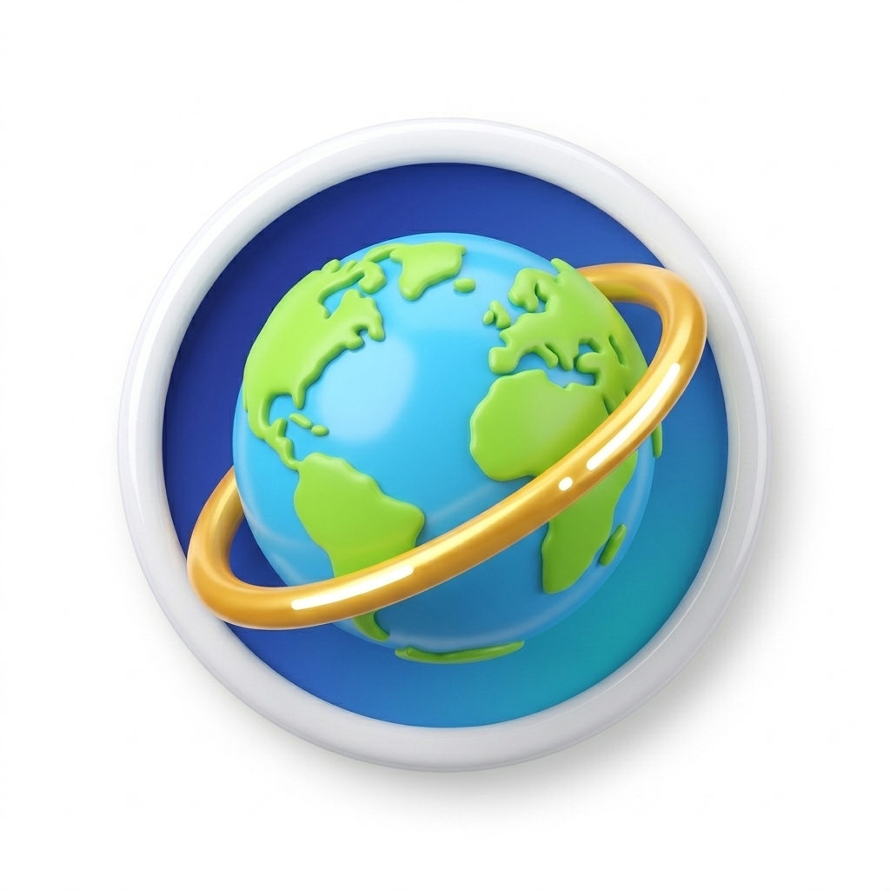

מסך כיתה
מסך כיתה

שמירה מקומית
מסך כיתה
 טוש / מרקר:
טוש / מרקר:

שמירה מקומיתהתחבר עם חשבון Google שלך כדי לשמור את כל המסכים, הווידג'טים ורשימות התלמידים שלך בענן בשרת ולגשת אליהם מכל מחשב בכיתה.
בינתיים כל העבודה שלך נשמרת אוטומטית בדפדפן במחשב הזה.
בחירת רקע למסך הכיתהרשימות אלו נשמרות בחשבון שלך ומשמשות את כלי "הגרלת שם" ו-"חלוקה לקבוצות". רשום כל תלמיד בשורה נפרדת.
בחר תבנית כדי לפתוח מערך כלים מותאם בלחיצה אחת:
שעון, סדר יום, לוח שנה, והודעת בוקר טוב לתלמידים

טיימר ויזואלי, רמזור, סמל עבודה בדממה, מד רעש והנחיות
מחלק לקבוצות, טיימר ספירה לאחור, סמל עבודה משותפת ומד רעש
גלגל מזל להגרלת שמות, לוח ניקוד קבוצתי, קוביות ושעון עצר

סקר הצבעה חי, הגרלת דובר, ולוח כתיבה לסיכום נקודות